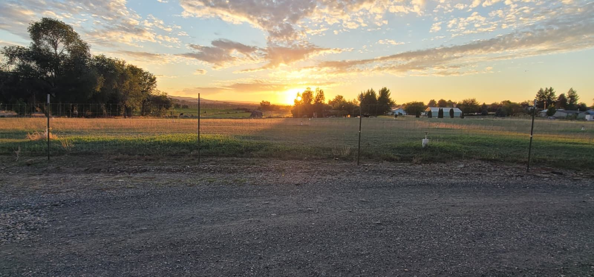

02 / Bring your own bed
Your rig.
Your night’s rest.
RV and living-quarters horse trailer dry camping in Prosser. Reserve horse boarding separately and sleep in your own setup.
Wide daylight view of shared rig spaces and turning area, trailer and tow vehicle together for scale.
The setting at sunset.

Know where the rig goes
Park once. Choose how you stay.
Included parking
One horse trailer and tow vehicle are included per boarding reservation when you sleep elsewhere or in the fifth wheel. Shared rig-space availability still needs confirmation.
Paid dry camping
Sleeping in your RV / LQ adds the camping rate. The same rig uses one shared space; it is not counted again as a second parking space.
Before you pull in
Placeholder — awaiting ownerPull-through or back-in layout, maximum rig length, turning radius, clearance and additional / detached trailer rules.The planning inventory is R1–R6: parking and paid camping share the same physical spaces.
Placeholder — awaiting ownerExact usable capacity and fifth-wheel footprint relative to the shared rig spaces.Before you haul
What to bring / What we need from you
Pack for your horses.
Bring your horses’ regular feed and care supplies; confirm nightly and weekly care duties before arrival. Monthly boarding is self-care.
For interstate travel, have a current Coggins (negative EIA test) and health certificate / Certificate of Veterinary Inspection (CVI) ready. USDA APHIS says most states require a CVI; negative EIA requirements and document validity depend on the destination state. Confirm your route’s requirements with your veterinarian and state animal-health officials.
General traveler guidance · USDA APHIS ↗
Placeholder — awaiting ownerProperty-specific horse papers, vaccination, separation and waiver requirements.Tell us about the haul.
- Arrival and departure dates, plus your expected arrival time
- Number of horses and any special care needs
- Total rig length, including tow vehicle, and number of trailers
- Sleep in your rig, in the fifth wheel, or elsewhere
- Dogs / other household pets, adults and children
- Your name and a way to reach you for confirmation
For dry camping, bring your own RV water and power arrangements. There are no electrical, sewer or RV water hookups.
Before the next stretch
Questions from the road.
When can I arrive or leave?
Can I bring my dog?
How large are the stalls or paddocks?
Is turnout available?
Who is the local vet or farrier?
Are there RV hookups?
How do I get here from I-82?
Can I pull straight through with my rig?
Who feeds and cleans for my horse?
What if my plans change?
Dates. Horses. Rig. Rest.
Put your stop together.
Prepare an availability request. No space is held in this preview.